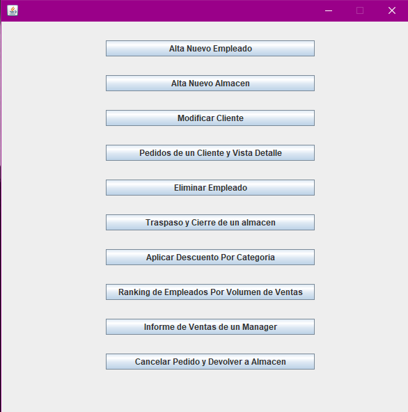
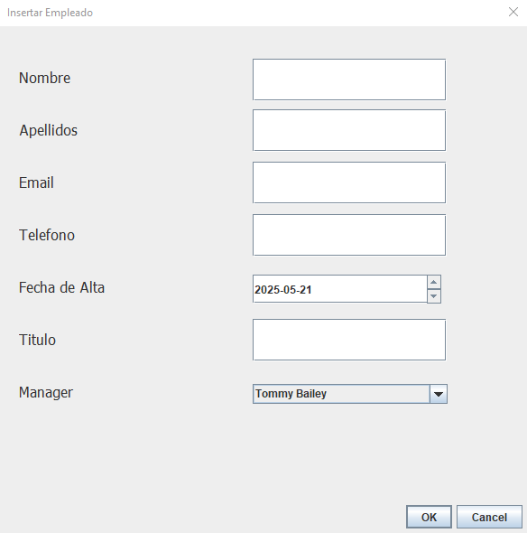
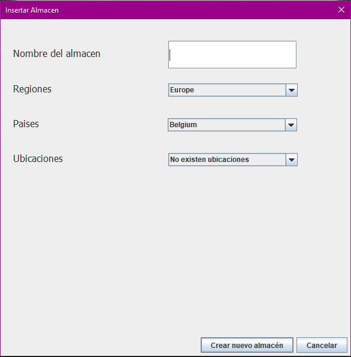
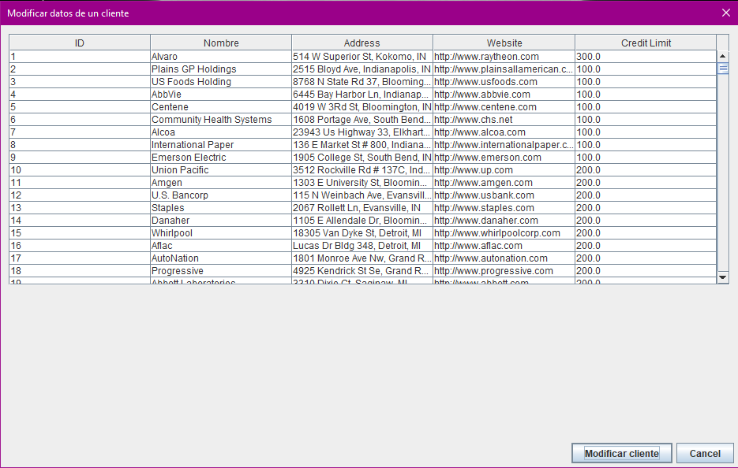
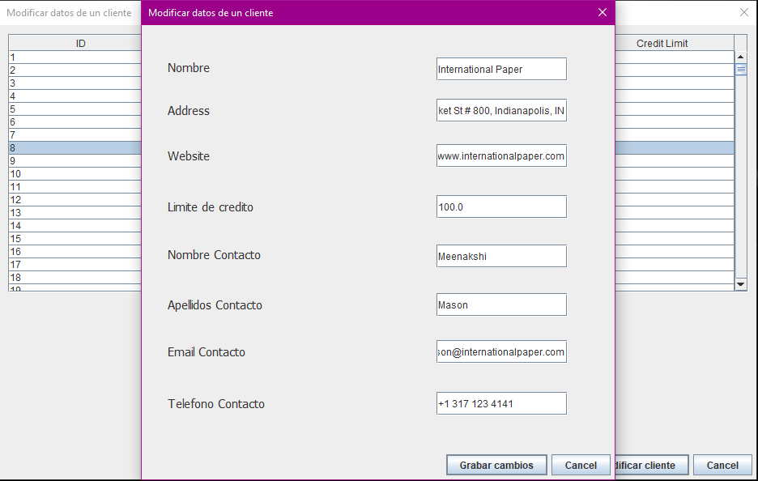

Pantalla Principal
En esta pantalla podemos observar que tenemos acceso a todas las ventanas de los ejercicios

Ejercicio 1 - Alta Nuevo Empleado
En este ventana, vamos a dar de alta un nuevo empleado en el sistema. Para ello, seguiremos los siguientes
pasos:
- Introducimos el nombre del empleado
- Introducimos el apellido del empleado
- Introducimos el email del empleado
- Introducimos el numero de telefono del empleado
- Introducimos la fecha de alta del empleado
- Introducimos el departamento del empleado
- Seleccionamos el manager del empleado
- Una vez rellenados todos los campos, le damos a Guardar esto insertara el empleado en
el sistema

Ejercicio 2 - Alta Nuevo Almacen
En esta ventana, vamos a dar de alta un nuevo almacen en el sistema. Para ello, seguiremos los siguentes
pasos:
- Introducimos el nombre del almacen. Si no introducimos nombre el sistema no nos dejara guardar el
almacen.
- Seleccionamos la region del almacen.
- Dependiendo de la region que seleccionemos, nos cargaran los paises de esa region
- En cuanto a la ubicaciones, puedo que algun pais no tengo ubicacion, si el pais tiene ubicaciones
saldran. En caso de no selecionar una ubicacion se pondra este texto "No existen ubicaciones" y el
sistema no dejara guardarlo e saltara un notificacion indicandolo.
- Una vez rellenados todos los campos, le damos a Guardar esto insertar el almacen en
el sistema.

Ejercicio 3 - Modificar datos de un cliente
En esta ventana, vamos a poder modificar los datos de un cliente en el sistema. Para ello, seguiremos los
siguientes pasos:
- Primero seleccionamos un cliente, en caso contrario nos saltara una notificacion diciendo "Por favor
seleccione una fila" 
- Una vez seleccionado el cliente, se nos abrira una ventana con los datos precargados en sus respetivos campos y podremos modificar sus datos en los campos
correspondientes. 
- Una vez modificados los datos, le damos a Guardar esto actualizara el cliente en el
sistema.